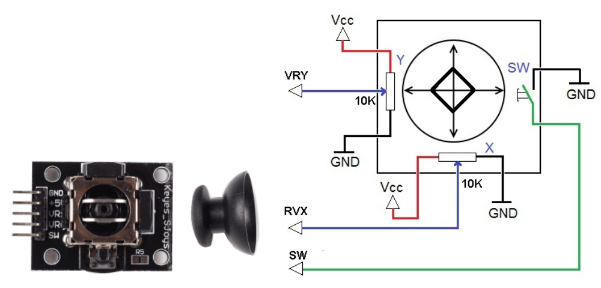
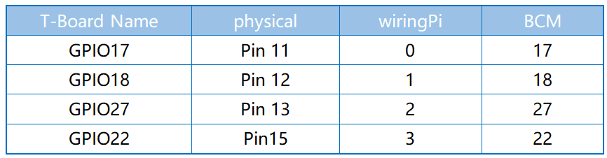

Note
Bonjour et bienvenue dans la communauté SunFounder Raspberry Pi & Arduino & ESP32 sur Facebook ! Plongez au cœur de Raspberry Pi, Arduino et ESP32 avec d’autres passionnés.
Pourquoi rejoindre ?
Support d’experts : Résolvez vos problèmes techniques et questions après-vente avec l’aide de notre communauté et de notre équipe.
Apprendre et partager : Échangez des astuces et des tutoriels pour améliorer vos compétences.
Aperçus exclusifs : Obtenez un accès anticipé aux annonces de nouveaux produits et aux avant-premières.
Réductions spéciales : Profitez de réductions exclusives sur nos derniers produits.
Promotions festives et concours : Participez à des concours et à des promotions pour les fêtes.
👉 Prêt à explorer et créer avec nous ? Cliquez sur [Ici] et rejoignez-nous dès aujourd’hui !
2.1.6 Joystick
Introduction
Dans ce projet, nous allons apprendre comment fonctionne un joystick. Nous allons manipuler le joystick et afficher les résultats à l’écran.
Composants

Principe
Joystick
L’idée de base d’un joystick est de traduire le mouvement d’un manche en informations électroniques que l’ordinateur peut traiter.
Pour communiquer toute l’amplitude des mouvements à l’ordinateur, un joystick doit mesurer la position du manche sur deux axes : l’axe X (gauche-droite) et l’axe Y (haut-bas). Comme en géométrie de base, les coordonnées X-Y déterminent précisément la position du manche.
Pour déterminer la position du manche, le système de contrôle du joystick surveille simplement la position de chaque axe. Le joystick analogique conventionnel le fait avec deux potentiomètres, ou résistances variables.
Le joystick dispose également d’une entrée numérique qui est activée lorsque l’on appuie sur le joystick.
Schéma de câblage
Lorsque les données du joystick sont lues, il y a quelques différences entre les axes : les données des axes X et Y sont analogiques, et nécessitent donc l’utilisation de l’ADC0834 pour convertir la valeur analogique en valeur numérique. Les données de l’axe Z sont numériques, vous pouvez donc directement utiliser le GPIO pour les lire, ou également utiliser l’ADC.

Procédures expérimentales
Étape 1 : Construire le circuit.

Pour les utilisateurs du langage C
Étape 2 : Aller dans le répertoire du code.
cd ~/davinci-kit-for-raspberry-pi/c/2.1.6/
Étape 3 : Compiler le code.
gcc 2.1.6_Joystick.c -lwiringPi
Étape 4 : Exécuter le fichier exécutable.
sudo ./a.out
Après avoir exécuté le code, tournez le joystick, et les valeurs correspondantes de x, y et Btn seront affichées à l’écran.
Note
Si cela ne fonctionne pas après exécution ou si une erreur « wiringPi.h: Aucun fichier ou répertoire de ce type » apparaît, veuillez vous référer à C code is not working?.
Code
#include <wiringPi.h>
#include <stdio.h>
#include <softPwm.h>
typedef unsigned char uchar;
typedef unsigned int uint;
#define ADC_CS 0
#define ADC_CLK 1
#define ADC_DIO 2
#define BtnPin 3
uchar get_ADC_Result(uint channel)
{
uchar i;
uchar dat1=0, dat2=0;
int sel = channel > 1 & 1;
int odd = channel & 1;
digitalWrite(ADC_CLK, 1);
delayMicroseconds(2);
digitalWrite(ADC_CLK, 0);
delayMicroseconds(2);
pinMode(ADC_DIO, OUTPUT);
digitalWrite(ADC_CS, 0);
// Bit de démarrage
digitalWrite(ADC_CLK,0);
digitalWrite(ADC_DIO,1); delayMicroseconds(2);
digitalWrite(ADC_CLK,1); delayMicroseconds(2);
// Mode Single End
digitalWrite(ADC_CLK,0);
digitalWrite(ADC_DIO,1); delayMicroseconds(2);
digitalWrite(ADC_CLK,1); delayMicroseconds(2);
// ODD
digitalWrite(ADC_CLK,0);
digitalWrite(ADC_DIO,odd); delayMicroseconds(2);
digitalWrite(ADC_CLK,1); delayMicroseconds(2);
// Sélection
digitalWrite(ADC_CLK,0);
digitalWrite(ADC_DIO,sel); delayMicroseconds(2);
digitalWrite(ADC_CLK,1);
digitalWrite(ADC_DIO,1); delayMicroseconds(2);
digitalWrite(ADC_CLK,0);
digitalWrite(ADC_DIO,1); delayMicroseconds(2);
for(i=0;i<8;i++)
{
digitalWrite(ADC_CLK,1); delayMicroseconds(2);
digitalWrite(ADC_CLK,0); delayMicroseconds(2);
pinMode(ADC_DIO, INPUT);
dat1=dat1<<1 | digitalRead(ADC_DIO);
}
for(i=0;i<8;i++)
{
dat2 = dat2 | ((uchar)(digitalRead(ADC_DIO))<<i);
digitalWrite(ADC_CLK,1); delayMicroseconds(2);
digitalWrite(ADC_CLK,0); delayMicroseconds(2);
}
digitalWrite(ADC_CS,1);
pinMode(ADC_DIO, OUTPUT);
return(dat1==dat2) ? dat1 : 0;
}
int main(void)
{
uchar x_val;
uchar y_val;
uchar btn_val;
if(wiringPiSetup() == -1){ // lorsque l'initialisation de wiring échoue, afficher un message à l'écran
printf("setup wiringPi failed !");
return 1;
}
pinMode(BtnPin, INPUT);
pullUpDnControl(BtnPin, PUD_UP);
pinMode(ADC_CS, OUTPUT);
pinMode(ADC_CLK, OUTPUT);
while(1){
x_val = get_ADC_Result(0);
y_val = get_ADC_Result(1);
btn_val = digitalRead(BtnPin);
printf("x = %d, y = %d, btn = %d\n", x_val, y_val, btn_val);
delay(100);
}
return 0;
}
Explication du Code
uchar get_ADC_Result(uint channel)
{
uchar i;
uchar dat1=0, dat2=0;
int sel = channel > 1 & 1;
int odd = channel & 1;
digitalWrite(ADC_CLK, 1);
delayMicroseconds(2);
digitalWrite(ADC_CLK, 0);
delayMicroseconds(2);
pinMode(ADC_DIO, OUTPUT);
digitalWrite(ADC_CS, 0);
// Bit de démarrage
digitalWrite(ADC_CLK,0);
digitalWrite(ADC_DIO,1); delayMicroseconds(2);
digitalWrite(ADC_CLK,1); delayMicroseconds(2);
// Mode Single End
digitalWrite(ADC_CLK,0);
digitalWrite(ADC_DIO,1); delayMicroseconds(2);
digitalWrite(ADC_CLK,1); delayMicroseconds(2);
......
Le processus de fonctionnement de cette fonction est détaillé dans la section 2.1.4 Potentiomètre.
while(1){
x_val = get_ADC_Result(0);
y_val = get_ADC_Result(1);
btn_val = digitalRead(BtnPin);
printf("x = %d, y = %d, btn = %d\n", x_val, y_val, btn_val);
delay(100);
}
Les broches VRX et VRY du joystick sont connectées respectivement aux canaux CH0 et CH1 de l’ADC0834. La fonction getResult() est donc appelée pour lire les valeurs de CH0 et CH1, qui sont ensuite stockées dans les variables x_val et y_val. De plus, la valeur de SW du joystick est lue et stockée dans la variable btn_val. Enfin, les valeurs de x_val, y_val et btn_val sont imprimées à l’écran grâce à la fonction print().
Pour les utilisateurs Python
Étape 2 : Accédez au dossier du code.
cd ~/davinci-kit-for-raspberry-pi/python/
Étape 3 : Exécutez.
sudo python3 2.1.6_Joystick.py
Après l’exécution du code, tournez le joystick, puis les valeurs correspondantes de x, y, Btn s’affichent à l’écran.
Code
Note
Vous pouvez Modifier/Réinitialiser/Copier/Exécuter/Arrêter le code ci-dessous. Mais avant cela, vous devez accéder au chemin du code source tel que davinci-kit-for-raspberry-pi/python.
import RPi.GPIO as GPIO
import ADC0834
import time
BtnPin = 22
def setup():
# Configure les modes GPIO en mode BCM
GPIO.setmode(GPIO.BCM)
GPIO.setup(BtnPin, GPIO.IN, pull_up_down=GPIO.PUD_UP)
ADC0834.setup()
def destroy():
# Libère les ressources
GPIO.cleanup()
def loop():
while True:
x_val = ADC0834.getResult(0)
y_val = ADC0834.getResult(1)
Btn_val = GPIO.input(BtnPin)
print ('X: %d Y: %d Btn: %d' % (x_val, y_val, Btn_val))
time.sleep(0.2)
if __name__ == '__main__':
setup()
try:
loop()
except KeyboardInterrupt: # Lorsque 'Ctrl+C' est pressé, le programme destroy() sera exécuté.
destroy()
Explication du Code
def loop():
while True:
x_val = ADC0834.getResult(0)
y_val = ADC0834.getResult(1)
Btn_val = GPIO.input(BtnPin)
print ('X: %d Y: %d Btn: %d' % (x_val, y_val, Btn_val))
time.sleep(0.2)
Les broches VRX et VRY du joystick sont connectées respectivement aux canaux CH0 et CH1 de l’ADC0834. La fonction getResult() est donc appelée pour lire les valeurs de CH0 et CH1. Ces valeurs sont ensuite stockées dans les variables x_val et y_val. De plus, la valeur de SW du joystick est lue et stockée dans la variable btn_val. Enfin, les valeurs de x_val, y_val et btn_val sont imprimées à l’écran avec la fonction print().